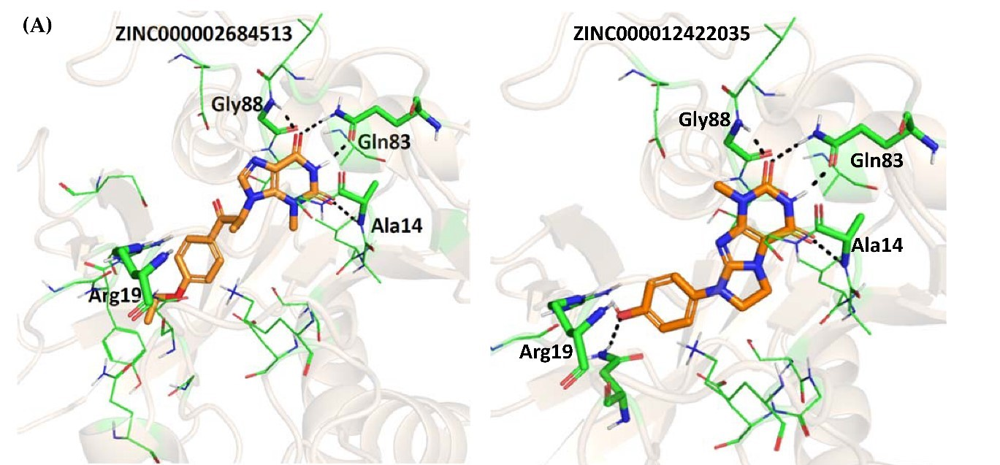
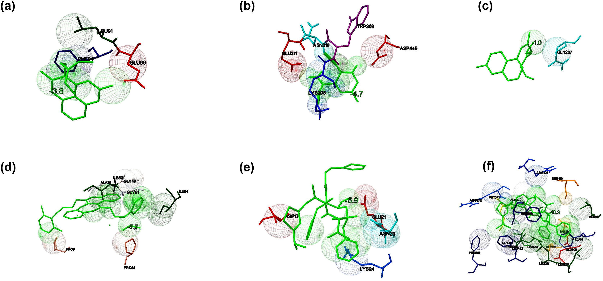
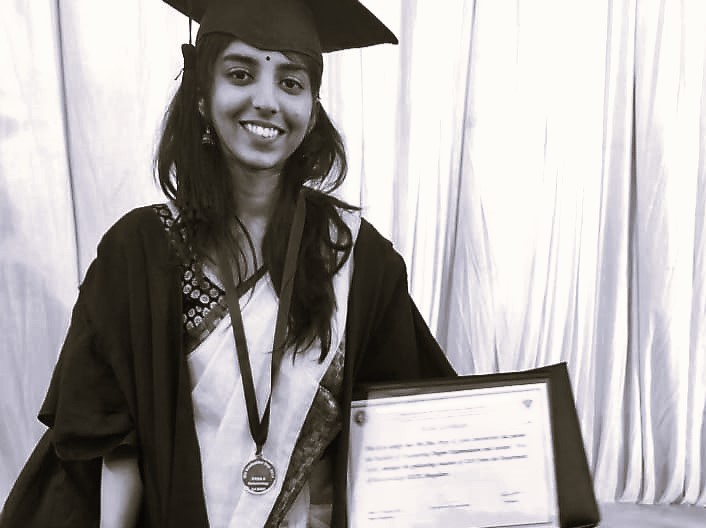

{kind=link}

Résumé
Experience
BioSolveIT GmbH // 2021–Present
Application Scientist (2023–Present) · Student Research Assistant & Master's Thesis Student (2021–2023)
Benchmarking Studies Software Evaluation Molecular Modelling
Centre for Chemical Biology and Therapeutics — inStem // 2019–2020
Research Intern
Virtual Screening Structure-based Drug Design Molecular Dynamics
Education
University of Münster // 2025–Present
Doctor of Philosophy (PhD)
Computational drug discovery
Thesis: Molecular Dynamics Simulations Fragment-Based Drug Design Machine Learning
University of Bonn — Bonn-Aachen Center for Information Technology // 2020–2022
Master of Science in Life Science Informatics
Thesis: LSTM Neural Networks Molecular Dynamics Biostatistics
Dayananda Sagar College of Engineering // 2015–2019
Bachelor of Engineering in Biotechnology
Thesis: in vitro Assays Network Pharmacology
Publications
{kind=link}

Structural and Molecular Basis of the Interaction of Selected Drugs towards Multiple Targets of SARS-CoV-2 by Molecular Docking and Dynamic Simulation Studies
View paper →Presentations
Computational Methods for Fragment Pose Prediction
Poster // March 2026
Frontiers in Medicinal Chemistry 2026, Münster
Evaluating Docking Methods Using Compounds Targeting SARS-CoV-2 Receptor
Poster // 11 November 2022
20th Anniversary of the Bonn-Aachen Center for Information Technology
Recognition

Gold Medal — First Rank, Department of Biotechnology (Class of 2019)
Dayananda Sagar College of Engineering, Bengaluru